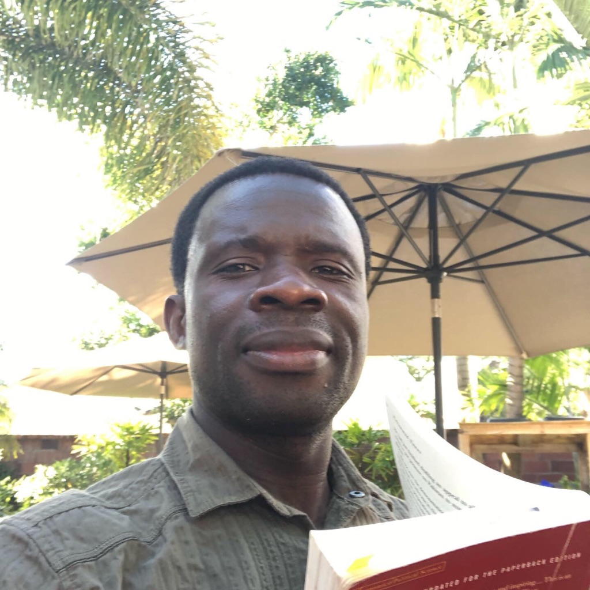

Emmanuel watema Foundation
WATEMA EMMANUEL STORY
I am Watema Emmanuel from the central African country of the Democratic Republic of Congo. My country is rich, wealthy and strong. However, it is confronted by serious conflicts which have resulted on turbulent times ever since it won its independence from Belgium on 1960. From 1960 to present, the beautiful people of this great country have never breath the air of peace.
On August 1996 … this was the year, the year that the grand war started. The war in Congo has cost more than five millions lives of my fellow Congolese people, including my dear parent. This armed conflict is perhaps the third biggest war on human history. After the Second World War where more lives have been lost and continue to be lost even to this day.
On 1996 the war forced me to flee my country of Congo into neighboring country Tanzania, the border town of Kigoma. I had lived in Tanza for more than fiften years as a refuge. I moved to the United states of America in June 21, 2016 where I am actually living as alien.